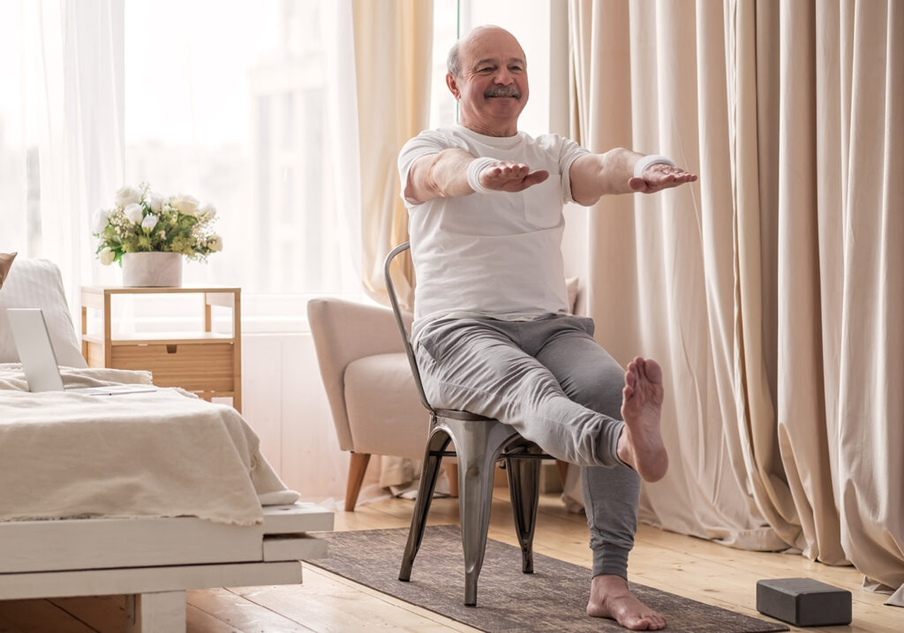

1. Seated Mountain with Leg Extension
Good for: Leg strength, circulation, and knee mobility.
- Sit tall on a sturdy chair, feet flat on the floor, hands resting on your thighs.
- Lengthen your spine and relax your shoulders away from your ears.
- Extend one leg forward until the knee is straight, foot flexed.
- Hold for 3 slow breaths, then lower. Repeat 5 times per leg.
Safety tip: Keep one hand on the chair arm for support if you feel unsteady, and stop if you feel knee pain.